Spec 001 is a read-only FastAPI + Jinja service that sits over the match store on
port 8420. Every route serves HTML to a browser and the same view model as JSON
(?format=json or Accept: application/json). It reports and never acts:
starting, pausing or branching a run is the harness's job, and the game client is never required.
Every run, turn, step, event, yield and configuration on these pages is synthetic fixture data
from tests/web_support/fixtures.py (make_store(), make_catalog_store(),
make_event()). Nothing came from a real Civilization VI game: the run ids
(run-live, run-01…run-05), the straight-line yields, the
2026-09-20T12:0x:00Z timestamps and the reasoning text are all fixture values.
The screen captures are real, but all the same frame. The fixtures' capture blobs are an 8-byte PNG signature (a broken image), so each screened-clean capture was swapped in-process for one genuine 720×450 window frame the 002 harness took of the Civ VI main menu. It does not correspond to the fixture turn it sits under.
Screenshots are viewport crops, not full-page captures: a page longer than the viewport is cut off at the bottom. That is the screenshot, not the page. The one real match store on this box was not used (see Not shown yet).
The service registers 13 routes. Every one of them was requested with a browser
Accept: text/html header during this pass except the two marked as not exercised.
| Route | What it shows |
|---|---|
| / | "Active runs" landing. With exactly one playing run it 307-redirects to that run's live view; with more, a list. |
| /runs | Run catalog table, sortable (?sort=…&order=…, 31 sortable keys including nested metrics). Gapped runs are quarantined from trending with a stated reason. |
| /runs/{run_id} | Live view: glance card (current turn, last decision, last confirmed time), latest screen capture, "act through the harness" box, run summary. |
| /runs/{run_id}/turns/{n} | Turn replay: metric trajectory with the turn highlighted, the turn record, every step with what the agent could see and what it decided. ?attempt= addresses a superseded attempt; ?focus= keeps a panel highlighted while stepping. |
| /runs/{run_id}/turns/{n}/steps/{i} | One decision step on its own: observation panels, the capture, the action block. |
| /runs/{run_id}/events | Run timeline: one card per event in time order. |
| /runs/{run_id}/metrics | Metric trajectories: trend eligibility, gapped turns, one server-rendered SVG series per metric. |
| /compare?runs=a,b,c | Comparison: starting-conditions check (Principle IV), quarantined runs, overlaid series. |
| /runs/{run_id}/panels/{panel_id} | A run-scoped panel rendered alone, with its registry metadata. |
| /runs/{run_id}/turns/{n}/panels/{panel_id} | A turn-scoped panel rendered alone. |
| /runs/{run_id}/turns/{n}/steps/{i}/panels/{panel_id} | A step-scoped panel rendered alone. Not exercised in this pass. |
| /captures/{capture_id}/image | The capture's PNG bytes. Behind every capture slot in the pages below. No separate screenshot. |
| /healthz | Service and store health plus the panel registry (37 panel ids). JSON only. |
Three JSON responses sit alongside the screenshots in this folder: run-live.json
(the exact data behind the live view, 19.9 KB), healthz.json, and
turn-9-gap-404.json, which shows that the gap page is a structured API answer too.
In README order. Where a 2600px-tall crop exists it is shown instead of the 1000px one and marked as such. Each image is the page as served, including the defects listed further down.
"Active runs" landing. Two playing runs (run-live, run-live-2) listed as links with a green running dot, then a generic key/value dump of the same run summaries (health, trend eligibility, reasons). The Empty state — row above the list is one of the placeholder rows noted below.
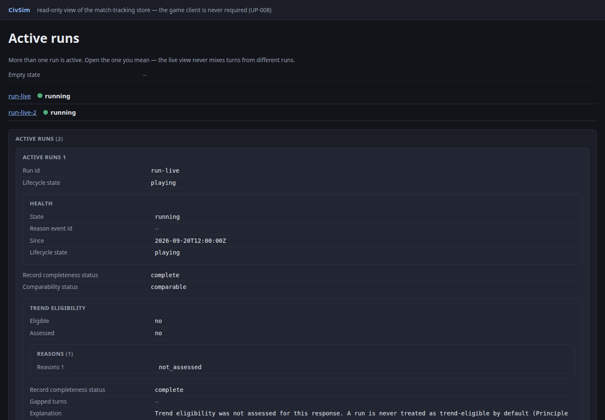
Run catalog, default sort started_at desc: 7 runs across 13 columns (Run, Trend eligible, Seed, Civilization, Leader, Ruleset, Model, Turns, Record, Comparability, Lifecycle, Started, Ended). Quarantined rows (run-03 has_gaps; run-live has a gap at turn 9) are tinted red with a NO badge and a Principle III explanation. Banner: "5 of 7 matching runs may be used as trending input".
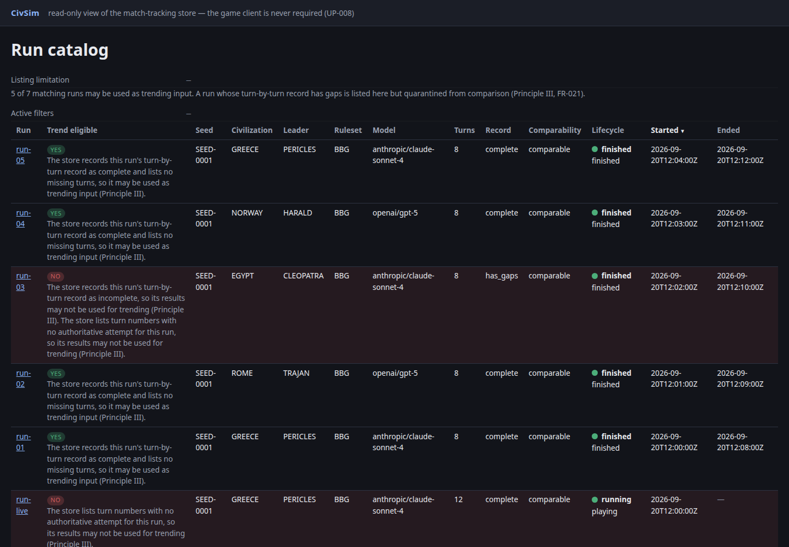
The same table re-sorted by a nested metric field; the sort indicator moves to that column. The README verified this file by HTTP status, content type and file size only, without opening it; this page does not claim more than that.
03-runs-catalog-sorted-science-desc.pngThe live view. Top: the glance card (run id, running playing, CURRENT TURN 12, LAST DECISION "Found City" with its reasoning, LAST CONFIRMED CURRENT AT) and "What the screen looked like", the turn 12 step 3 capture (the real frame). Below: the "To intervene, act through the harness" box (run id, lifecycle, last known good turn and save), the full RUN SUMMARY, and the start of the Turn 12 section. The orange "connection lost — this view may be stale" text under the timestamp is defect 1, shown on every load even though the connection was fine; since fixed.
04b-run-live-tall.png (04-run-live.png is the 1000px crop of the same page)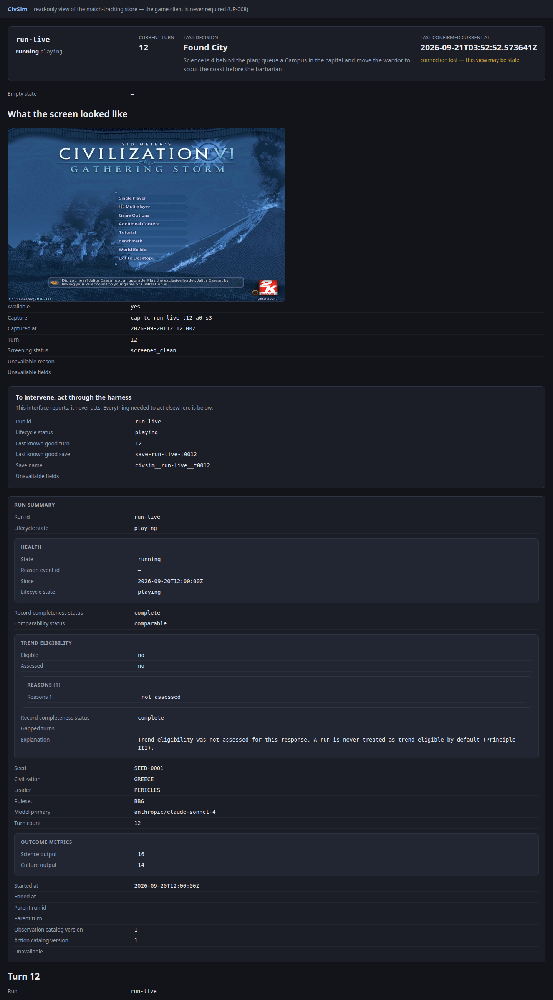
Turn replay. Run nav (Run / Timeline / Metric trajectories), turn nav (prev/next, Jump list, note the duplicate "1"), the focus bar, and the inline-SVG Metric Trajectory with turn 3 highlighted and a dashed red gap marker at turn 9 where the line breaks. Then the Turn 3 record (attempt 0, authoritative, outcome ended_by_agent, 3 steps, yields, completeness, step window) and Step 1: "WHAT THE AGENT COULD SEE" (Turn State and Cities panels with their catalog guidance), the real capture on the right, and the decision (Found City, units.found_city, applied, parity basis).
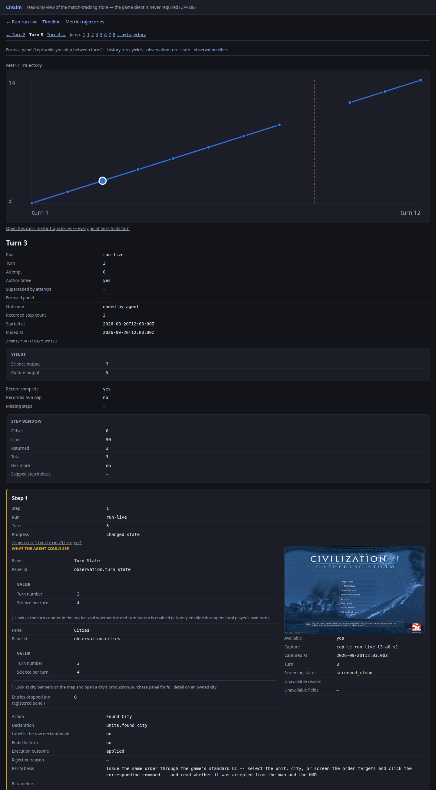
?focus= is accepted and echoed ("Focused panel: observation.map", and a "clear focus" link appears), but no panel with that id exists in this fixture turn, so nothing is highlighted.
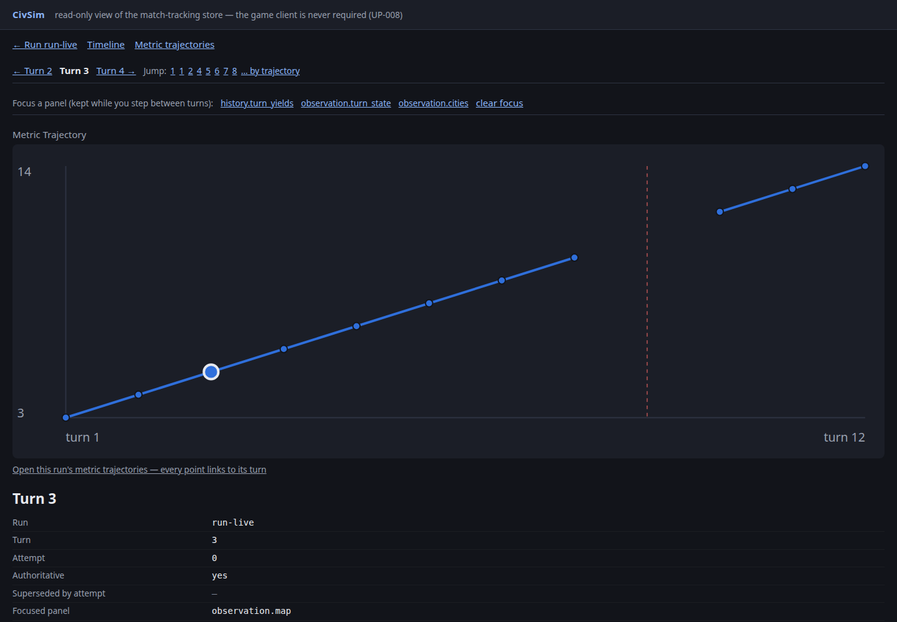
Focus on a panel the turn actually has: observation.cities is highlighted (bold, orange) in the focus bar beside a "clear focus" link, and the turn record reads "Focused panel: observation.cities". The focused step panel itself sits below the 1000px fold.
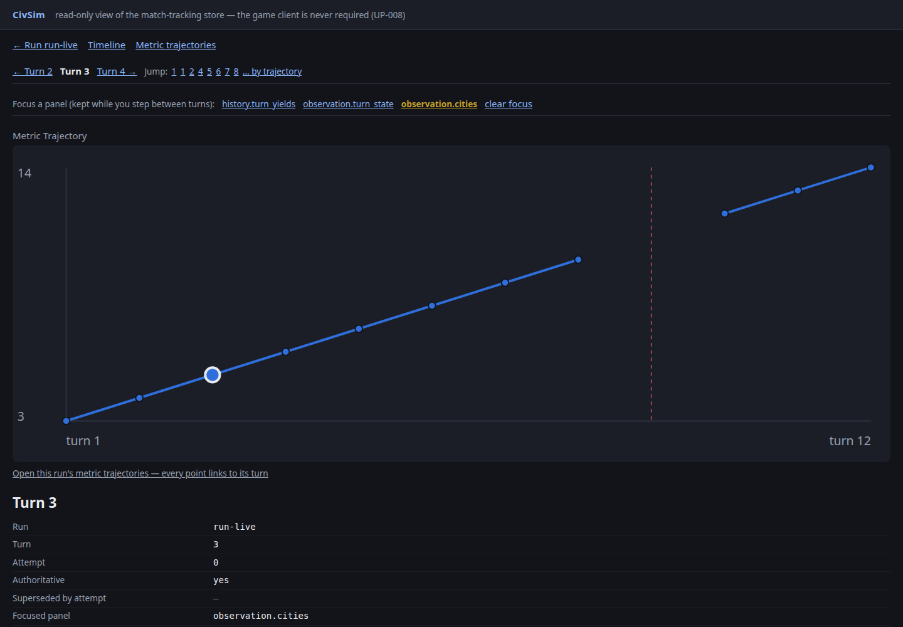
The abandoned attempt, still addressable (FR-009). An orange banner: "This is attempt 0 of turn 7, and it is no longer the authoritative record: attempt 1 superseded it", linking to the current record and to the run timeline, and citing FR-017 (an interrupted run and its resume are one run). The chart highlights turn 7.
07-turn-7-attempt-0-superseded.png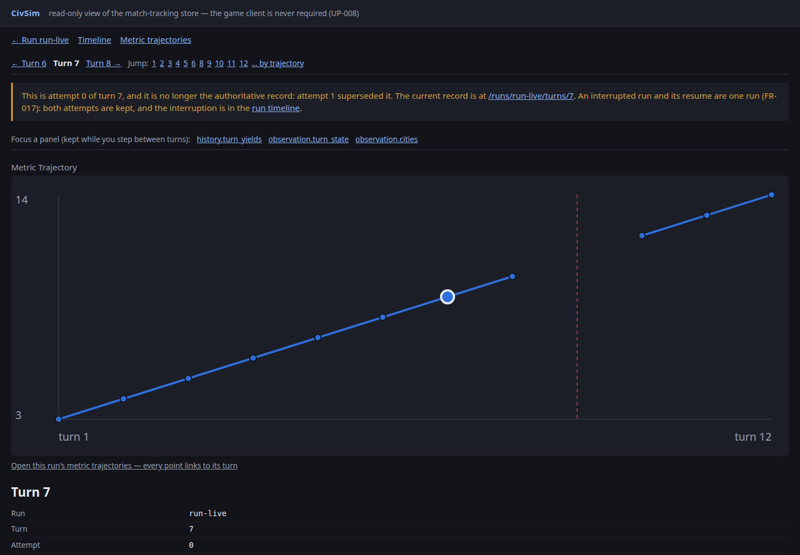
The authoritative attempt 1 of the same turn, with no banner. Verified in the README by HTTP status and file size only, not opened.
08-turn-7-authoritative.png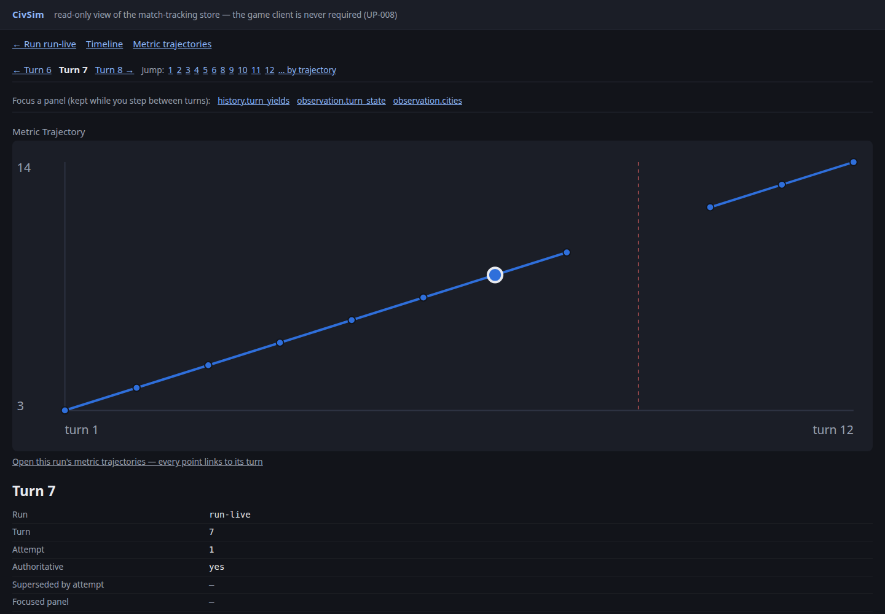
A single decision step: progress changed_state, the two observation panels (Turn State, Cities) with their values and catalog guidance, the real capture with its capture id (cap-tc-run-live-t3-a0-s1) and screening status (screened_clean), and the action block (Found City, units.found_city, applied).
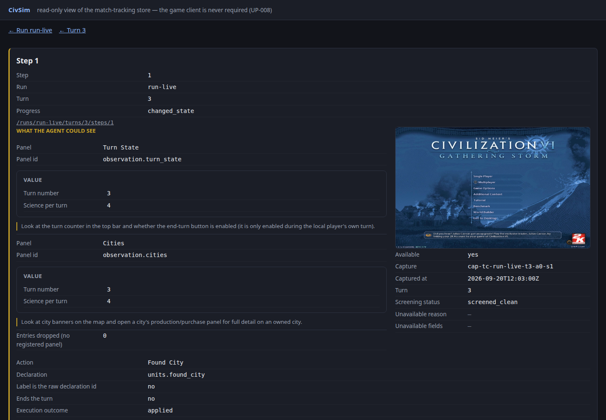
This 404 is the designed behaviour, not an error in the app. Turn 9 is a gap in the fixture, and the page says so: "turn gap — Turn 9 is inside this run's recorded range (1-12) but has no authoritative attempt: the harness recorded it as a gap. The run's turn-by-turn record is incomplete and it is unfit for trend comparison." It carries the turn_gaps / turn_range detail and a "Back to the live view" link. The first row reads Error: error (defect 4). The same URL as JSON returns the same structured answer with kind: turn_gap.
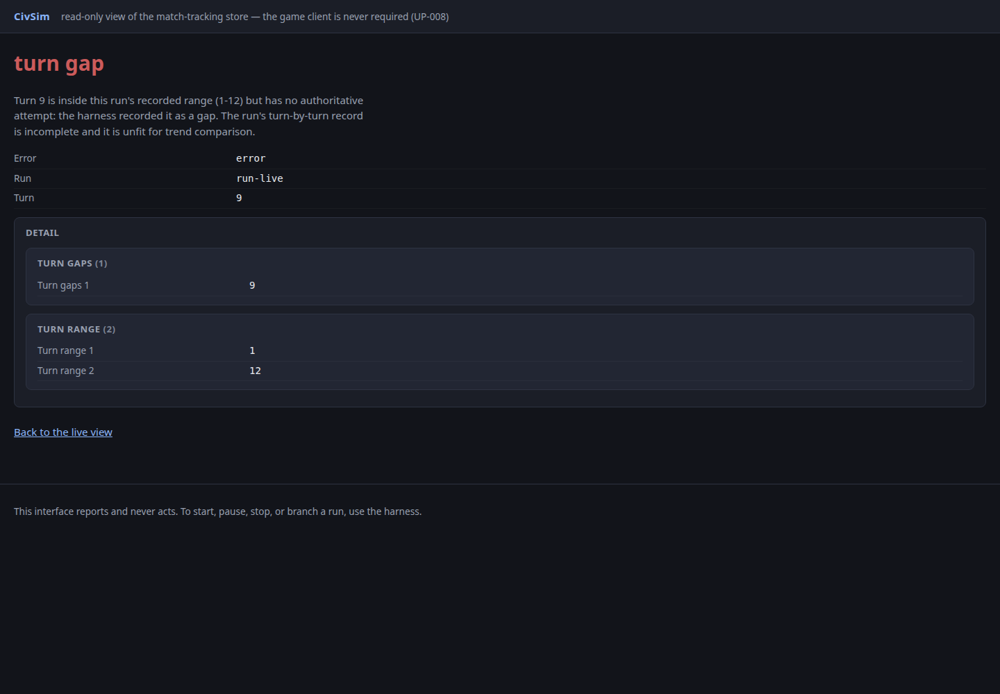
Run timeline: one card per event in time order, with a colour bar on the left. Visible here: run_started, lifecycle_transition (with From/To detail: created → playing), turn_started, save_taken; the fixture has 9 events in all.
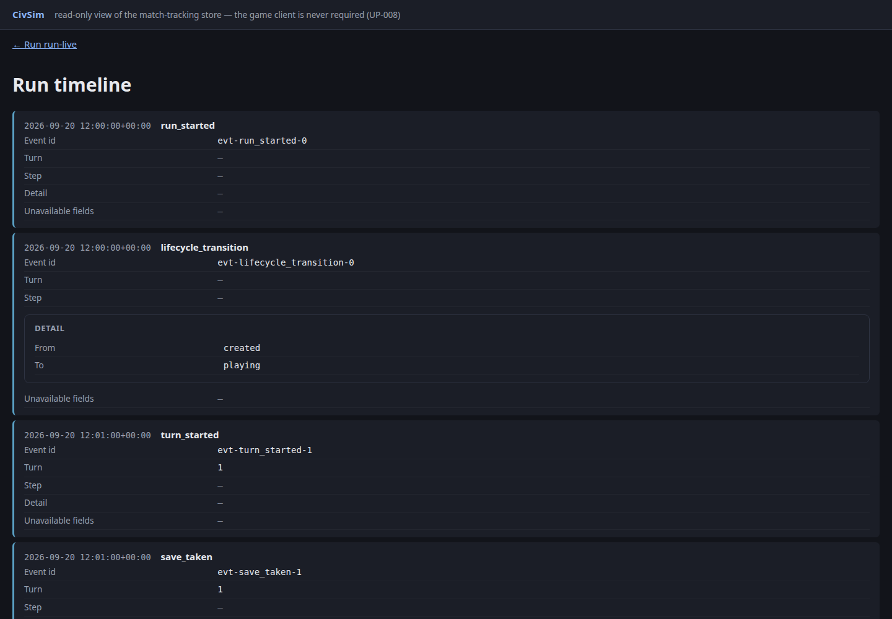
Metric trajectories. "May be used for trending: no" with the reason turn_gaps_recorded, the "Turns with no authoritative record: Turn 9" block, then both server-rendered SVG series (Culture Output, Science Output), each with the dashed gap marker at turn 9 and every point a link to its turn. Below the charts, the generic dump of metrics recorded and series points.
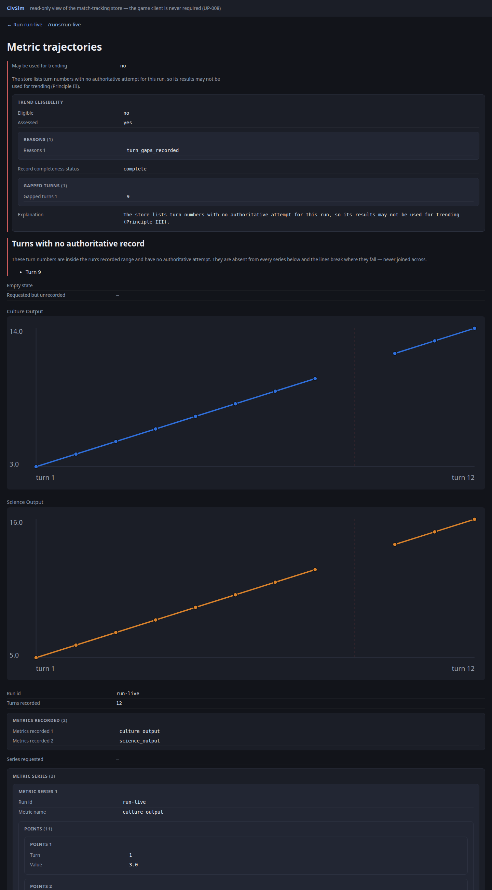
Comparison. "Comparison basis — Same starting conditions: no" (the runs differ in civilization, leader and model_primary; Principle IV), "Quarantined from the trend: run-03", and the legend with TREND ELIGIBLE / QUARANTINED badges. Then the two overlaid series (run-01 blue, run-02 orange; run-03 excluded from every line), "Divergence points —", and the generic per-run dump.
13b-compare-run-01-02-03-tall.png (13-compare-run-01-02-03.png is the 1000px crop)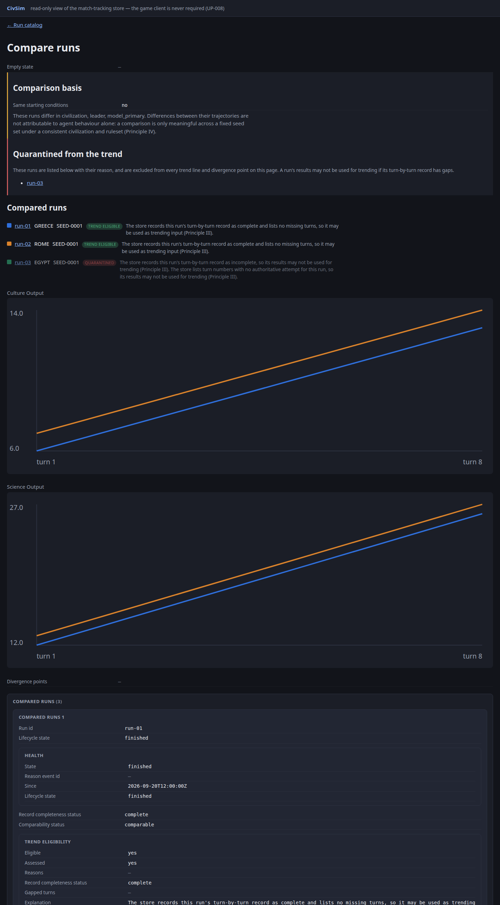
A single registered panel rendered on its own: a category pill (out_of_game_telemetry), then the registry metadata (id, scope run, category, panel basis, stories US1–US4, 10 source fields, declared-in file) and its current values.
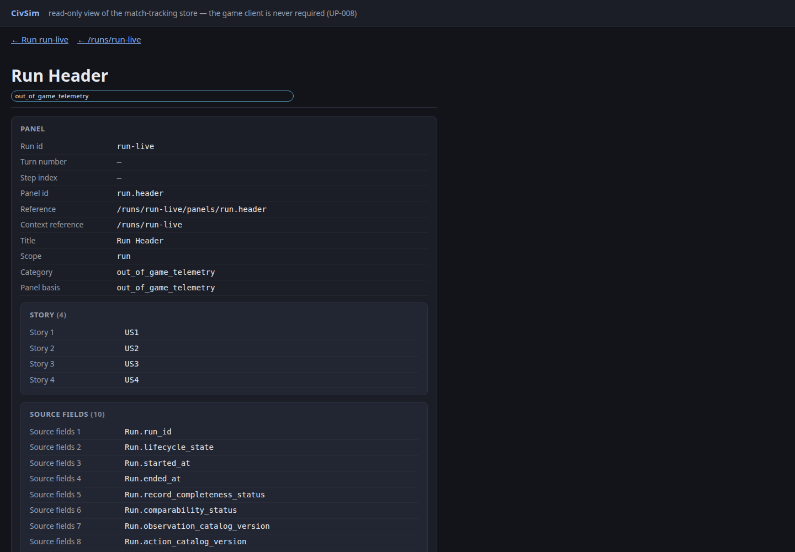
The capture.screen panel for turn 3: its guidance ("Look at the game's own screen at that moment…"), scope step, category in_game, source fields ScreenCapture.capture_id / captured_at / turn_number, declared in live.yaml. The VALUES block begins at the fold.
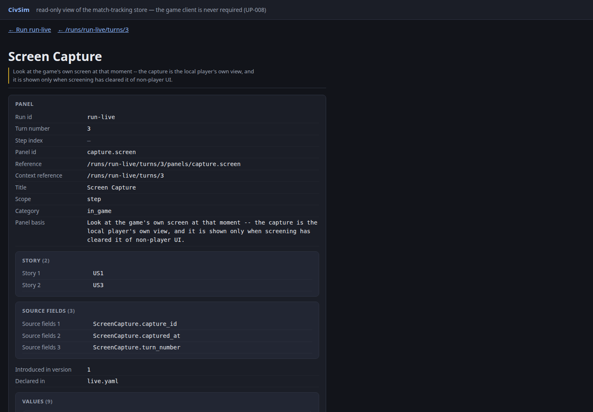
Raw JSON in Chromium's own JSON viewer. /healthz returns application/json even for Accept: text/html; it has no HTML template because health is machine-facing. Shows ok: true, store ok, panel registry version 1 with its content hash and all 37 panel ids, and bind_addresses: ["127.0.0.1"].
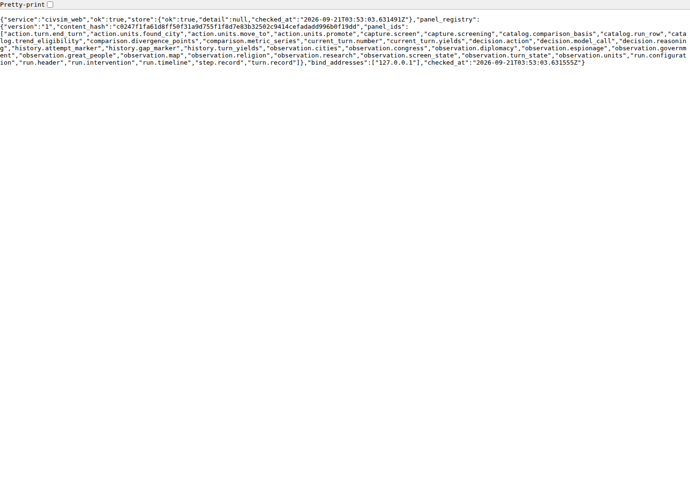
Phone width. Everything below the glance card stacks correctly; the glance card does not, and its LAST DECISION and LAST CONFIRMED columns are clipped off the right edge (defect 2: "LAS", "Fo", "Sci", "Ca", "to" are the visible fragments).
17-run-live-mobile-420.png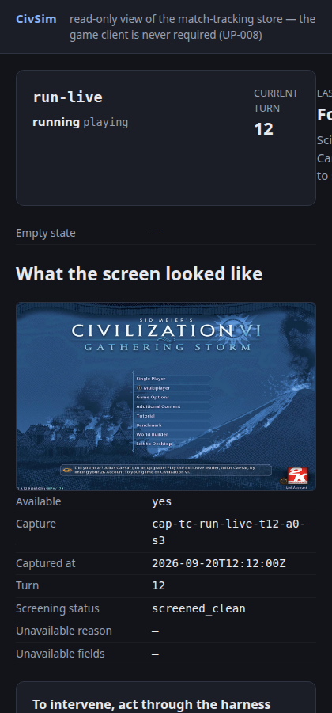
Phone width. The catalog table keeps all its columns and scrolls horizontally; only Run through Leader fit in the viewport, and the Trend-eligible explanation wraps into a very tall, narrow column.
18-runs-catalog-mobile-420.png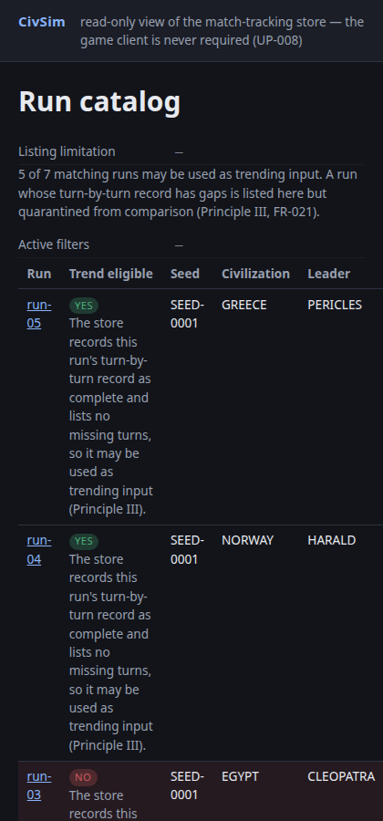
The README's pixel-level pass covered 01, 02, 04, 04b, 05b, 06, 06b, 07, 09, 10, 11, 12, 13, 13b, 15, 16, 17 and 18; files 03, 05, 08, 12b and 14 were checked only by HTTP status, content type and file size. These are the things it found wrong or misleading.
hidden attribute and
poll.js only un-hides it after two consecutive failed polls (the DOM after JS confirmed
data-stale="false" and hidden="" still set). But style.css declared
.stale-marker { display: block }, and an author display rule overrides the user-agent
[hidden] { display: none }. So the warning text was visible on 04, 04b and 17 while the orange
glance border that a genuine stale state adds was correctly absent. The fix has since landed in
src/civsim_web/static/style.css as .stale-marker[hidden] { display: none }
(commit 3616649). The screenshots above predate it.
.glance has fixed minimum grid columns (minmax(16rem,1fr) auto minmax(20rem,2fr) auto,
at least ~36rem = 576px) and style.css has no @media rule at all, so at 420px the
LAST DECISION and LAST CONFIRMED columns are clipped off the right edge. Everything below the card stacks fine.
turn_replay.html emits an unconditional link to turn 1, then its loop over
range(max(turn-5,1), turn+6) emits turn 1 again whenever the current turn is 6 or lower. Cosmetic;
both links work. On turn 7 (07) the list is correct.
"error": "error"; the informative field is
"kind": "turn_gap", which the HTML page does not show as a row.
/healthz serves JSON only.
It answers application/json even to a browser asking for HTML, so 16 is Chromium's JSON viewer
rather than a CivSim page. Deliberate (health is machine-facing), but worth knowing when you open it.
/captures/{id}/image render as a proper image in the live view, the replay, the step page and the panel route./static/style.css, /static/poll.js, capture images, and a harmless /favicon.ico 404). No webfonts, no CDN.
Not exercised in this pass: the step-scoped panel route, ?page= on the catalog,
?series= on metrics, &metrics= on compare, the withheld-capture rendering (turn 5
exists in the fixture but was not screenshotted), the published_port_only store shape, and an
unreachable store (the 503 path).
The one real MatchStore on this box (civsim-match-store.db at the repo root) was not
used for these shots. It was in use by a live harness run while they were taken, and it currently holds only
paused runs from tonight's live harness attempts: a few-run, few-turn store that would not exercise the catalog,
comparison, replay-attempt or gap pages at all.
Real-run screenshots follow once a run finishes. Wiring the real store in is a --store module:attr
change on the launcher, nothing in the UI.